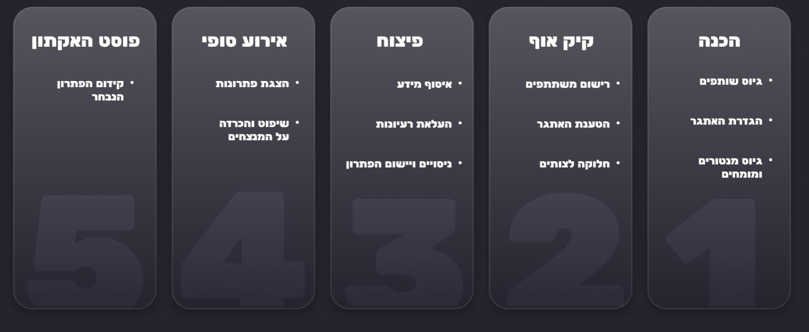

האקתון הוא אירוע יזמות מרתוני, מרוכז ואינטנסיבי המושתת על חוכמת ההמונים. המילה האקתון היא הלחם בין המילה פיצוח (Hack) למילה מרתון. האקתון דורש מיומנויות כמו עבודה בצוות, חשיבה יצירתית, יכולת פיתוח ועמידה בלוחות זמנים.
איך זה עובד?
המשתתפים בהאקתון מתחלקים לקבוצות חשיבה, ובפרק זמן קצוב הם מעלים רעיונות יחדיו ומפתחים המצאות במטרה לענות על אתגר שהוגדר מראש על ידי מארגני ההאקתון. האתגר יכול להיות טכנולוגי, ציבורי, חברתי או מכל עולם תוכן אחר. עם תחילת האירוע המשתתפים מתרכזים לעבודה בצוותים קטנים, וכל צוות מתכנס להגות רעיונות לפתרון הבעיה הקשורה לנושא ההאקתון. עם בחירת הרעיון המתאים, יושבים הצוותים לפיתוח הרעיון לכדי פתרון ומעשי ויישומו. את הפתרונות מביאים הצוותים בפני פאנל שופטים, שלרוב מורכב ממארגני ההאקתון ומבכירים ובעלי ותק בתעשיות הרלוונטיות. מדדי השיפוט משתנים בהתאם לסוג ההאקתון, לתחומיו ולמטרותיו. המדדים יוגדרו מראש ויוצגו למשתתפים על מנת שאלה יוכלו להרכיב את התוצר הסופי בראי אותם הקריטריונים.
אז מה יוצא מזה? (חוץ מפתרון לבעיה)
- רעיונות חדשים פורצי דרך
- הגברת המורל והגיבוש
- קידום ועידוד חדשנות
מה צריך שיהיה?
- תקציב לאוכל ולציוד
- מקום אירוח
- קשב ותקציב ליישום הפתרון הנבחר
- התחייבות מהמפקדים הבכירים לקדם ולתמוך בתוצרי האירוע
מה הלו"ז?
לוח הזמנים של האקתון צריך להיות מובנה וברור, תוך איזון בין עבודה אינטנסיבית להפסקות והדרכה. מומלץ לפתוח את האירוע בהרשמה, הצגת אתגרים וחלוקה לצוותים. במהלך ההאקתון, יש לשלב צ'ק-אינים, סשנים עם מנטורים והרצאות השראה לצד זמני עבודה רציפים. לקראת הסיום, יש להגדיר זמן ברור להגשת הפרויקטים, הצגת הפתרונות והכרזת הזוכים
הנה לו"ז לדוגמה להאקתון בן שלושה ימים:
את מי מזמינים?
ניתן לסווג אירועי האקתון שונים לפי המשתתפים בהם:
האקתון פנימי, בו המשתתפים הם עובדי הארגון או חברים בו. האקתון מסוג זה מאפשר להעלות פתרונות ולייעל תהליכים מתוך היכרות עם הארגון, תרבותו וצרכיו. מטרותיו של האקתון כזה הן גם עידוד ליוזמה ולחדשנות, יצירת תחושת שייכות, חיזוק ההזדהות עם הארגון ועם מטרותיו, ושבירת חומות היררכיים.
האקתון חיצוני, בו משתתף קהל חיצוני לארגון, כמו תוכניתנים, מדענים, אנשי מדיה או אף הציבור הרחב. האקתון כזה מאפשר לפתח פתרונות, על ידי "ייבוא" של ידע או כישורים שאין בארגון. מטרותיו של האקתון חיצוני יכולות להיות גם גיוס כוח אדם, פרסום ומיתוג, הטמעת מערכות וכיו"ב.
איך עושים את זה?
אז מה מקבל המנצח?
אין דבר שמדרבן אנשים להשתתף בתחרות כמו פרס. פרס יכול להיות חומרי כמו כסף או גאדג'ט או לחילופין הוקרה והערכה. פרס יכול להיות גם הזדמנות לקדם את הרעיון כמו כניסה לאינקובטור או אקסלרטור או אפילו קבלת מלגה או התמחות.
נסו לוודא שהפרסים יהיו מוכנים ביום ההאקתון.
הנה כמה דוגמאות לפרסים נפוצים:
שימו לב! כדי לתכנן את ההאקתון שלכם כדאי להשתמש במתודת האקתון קנבס.
למרות שהאקתונים מוכרים בעיקר בהקשרים טכנולוגים הם שיטת עבודה אפקטיבית גם בהקשרים ונושאים אחרים.
בהצלחה!